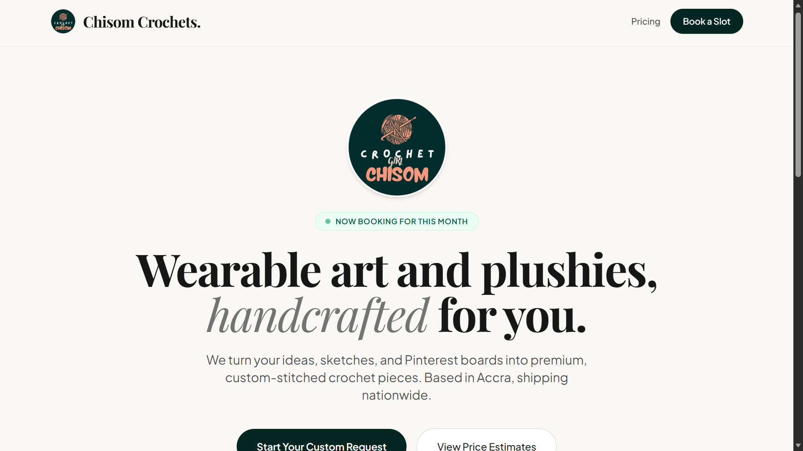
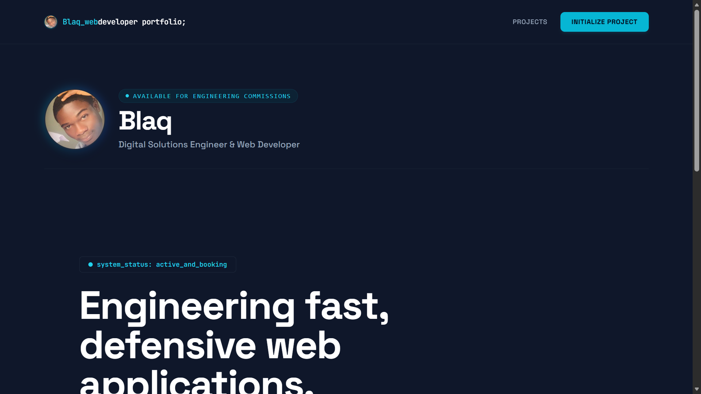

Blaq
Digital Solutions Engineer & Web Developer
Deployed Digital Systems
Chisom Crochets Booking Architecture
A custom commission-routing engine built for a premium bespoke garment enterprise. Traditional shopping frameworks crash under customizable parameters; this system safely handles detailed parameter gathering, reference asset paths, and local merchant delivery logistics, completely optimized against mobile layout shifts.

My Personal Portfolio
A recursive case study displaying the deployment pipeline of this portfolio itself. Built to prove that custom, lightweight static execution layers outperform heavy commercial page builders in both mobile rendering stability and client conversion routing.

blaqout-portfolio.git
[Upload portfolio-preview.png to replace]Project Node 03
Compiling and hardening an additional digital client application layer. Code base compilation parameters and full live infrastructure tracking links will mount automatically upon midnight deployment.